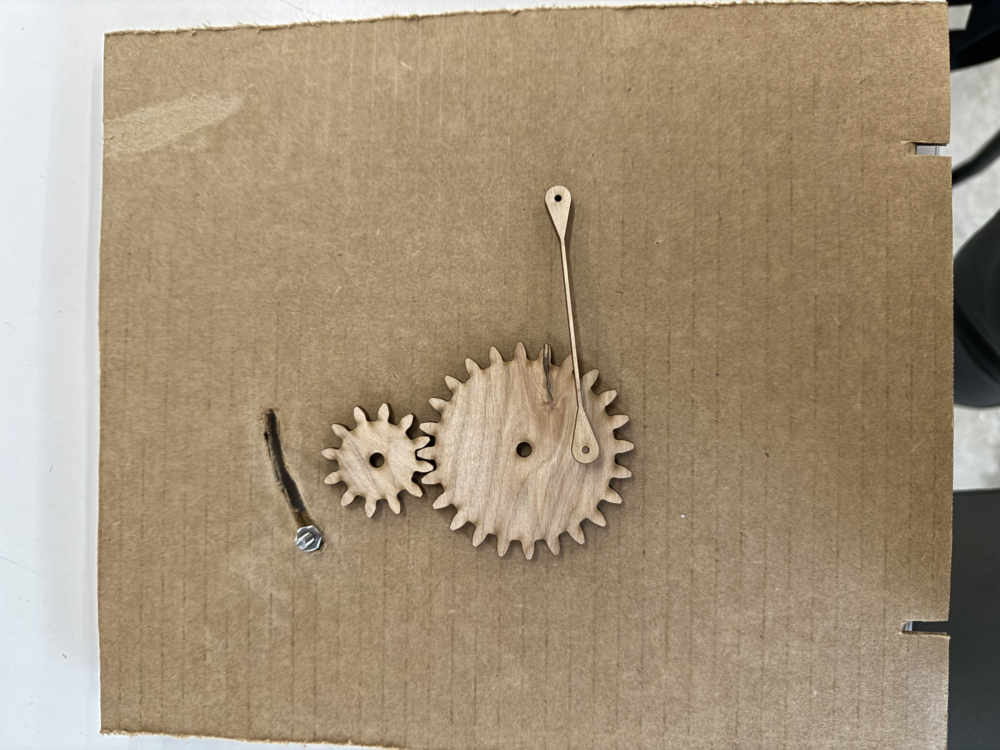
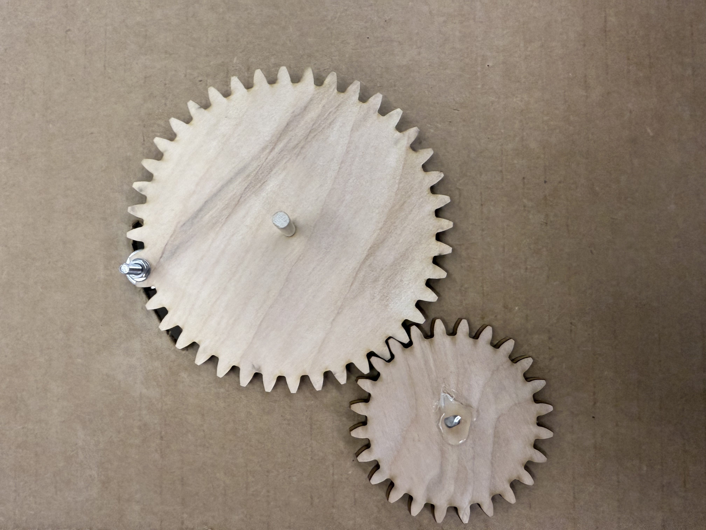
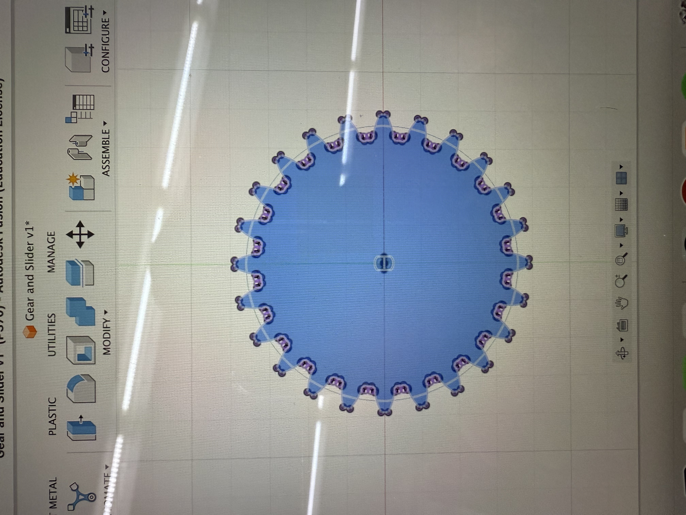

<div class="textcontainer">
<p class="margin"> </p>
<h3>Week 4: Microcontroller Programming</h3>
<h4>[Do Something with an arduino]</h4>
<br></br>
For the micro controller portion I decided to build upon my week 3 design of the mechanical iris. I programmed a motor to open and close the iris.
<br></br>
<br></br>
This was an initially difficult problem. Not only dealing with the coding but the gears I had cut using the laser cutter was cardboard. As I began to build the mechanical iris incoorporating the gears I found that they would not work and I needed a stoger material. I also found that I did not need the arm. If I were to place the gears in different spots i could get the same effect without the extra part.
<br></br>

<br></br>

<br></br>
<br></br>
This caused me to use plyboard as my gears. This was initially a good idea. However, as I began to try and out the gears onto the motor I found that the holes I had cut in the middle would not fit the motor. I ended up having to redesign the slots in the gears to fit the motor and sand down the arm of the motor attaching to the gears.
<br></br>

<br></br>
Once I fixed the slot design I was able to the gears to the motor and get everything working. The friction point I hit here was the literal fiction of the bolt that I used rubbing against the cardboard. This caused the glide of the bolt to be hindered and the motor did not have enough power to push through this friction point without assistance.
<br></br>
<video width="640" height="480" controls>
<source src="IMG_0331.MOV" type="video/mp4">
</video>
<br></br>
How it looks completed
<br></br>
<video width="640" height="480" controls>
<source src="IMG_0330.MOV" type="video/mp4">
</video>
<br></br>
Schematic
<br></br>
<br></br>
Code Snippets
<br></br>
<pre>
const int A1A = 3; // define pin 3 for A-1A (PWM Speed)
const int A1B = 4; // define pin 4 for A-1B (direction)
void setup() {
pinMode(A1A, OUTPUT); // specify these pins as outputs
pinMode(A1B, OUTPUT);
analogWrite(A1A, 0); // start with the motors off
digitalWrite(A1B, LOW);
}
void loop() {
// start the motor at a low speed
analogWrite(A1A, 150);
digitalWrite(A1B, LOW);
delay(500); // allow the motor to run for 4 seconds
// stop the motor
analogWrite(A1A, 0); // setting both pins LOW stops the motor
delay(1000); // keep the motor off for 2 seconds
// start the motor in opposite direction at the same speed
digitalWrite(A1B, HIGH); // switch direction
analogWrite(A1A, 255 - 150); // here the logic for speed is inverted
delay(500); // allow the motor to run for 4 seconds
// speed up the motor
analogWrite(A1A, 0); // here the logic for speed is inverted
delay(500);
// stop the motor
analogWrite(A1A, 0); // setting both pins LOW stops the motor
digitalWrite(A1B, LOW);
delay(500);
}
</pre>
<br></br>
<br></br>
Going foward I would improve on:
<ul>
<li>
Actually mapping out glide path
</li>
<li>
Actually mapping out glide path
</li>
<li>
Making the diameter of slot properly fit without having to manipulate the arm of the motor by sanding it down
</li>
<li>
Creating gears that are meant to seat a bolt arm
</li>
</ul>
<br></br>
</div>